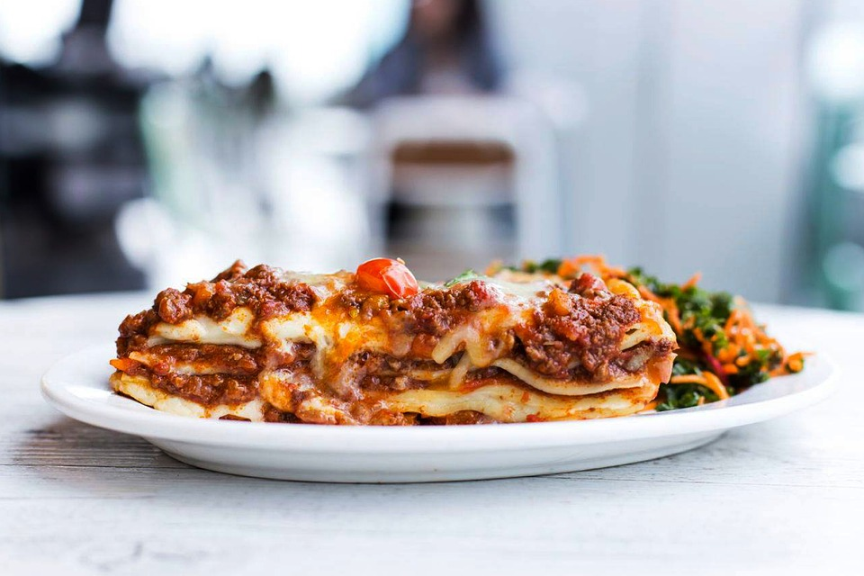

A classic Italian beef lasagne made using our traditional beef ragu and bechamel sauce.

Ingredients
- Beef ragu. Please follow this link for our traditional beef ragu recipe.
For the bechamel sauce:
- 50 g butter
- 50 g all purpose flour
- 500 ml milk
- A pinch of grated nutmeg
- A pinch of salt and pepper
For the lasagne:
- 400-500g lasagne sheets
- 50 g grated parmesan
Method
- Pre-heat the oven to 180c/160c fan/gas mark 4
Making the bechemel sauce:
- On a low heat, in a small saucepan, melt the butter.
- Once the butter has melted add the flour and stir continuously until the mixture thickens and forms a roux.
- Gradually add the milk to the roux, whisking as you go until you get a smooth sauce.
- Continue to whisk the sauce until it has thickened to where it can coat the back of a wooden spoon. Approximately 5 or so minutes.
- Remove from the heat and season to taste with a little pinch or salt and pepper and grated nutmeg.
Arranging the lasagne
- Coat the base of a good size baking dish with a spoonful of the previously prepared ragu and then cover with a single layer of lasagne sheets.
- Top the layer of pasta sheets with a generous amount of the bechamel sauce.
- Spoon over a good amount of the ragu and scatter some grated parmesan.
- Repeat the above layers to fill the baking dish and using all of the ragu.
- Add one last lasagne sheet and top with the remaining bechamel sauce and parmesan.
- Place the baking dish into the pre-heated oven and allow to bake for 1 hour until the top has browned and the sauce is bubbling.
- Allow to rest for 5-10 minutes before serving